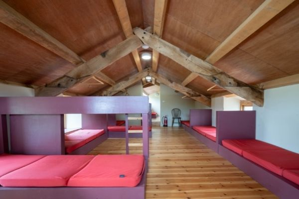
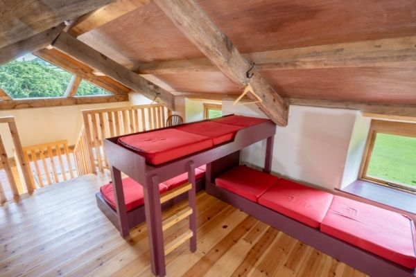
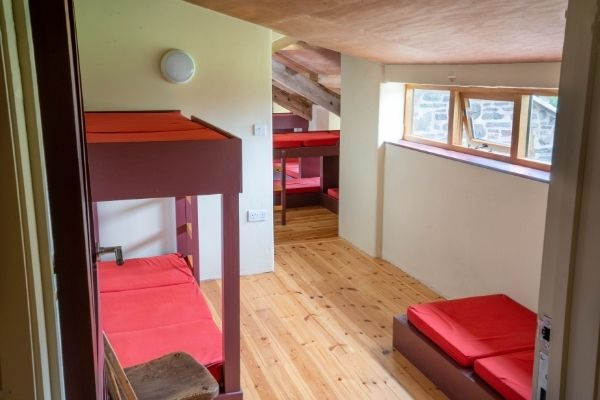
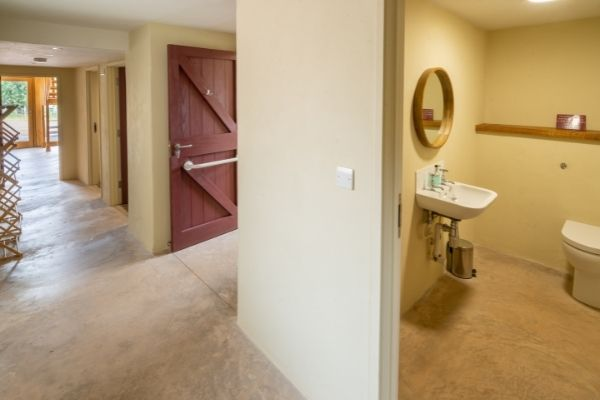
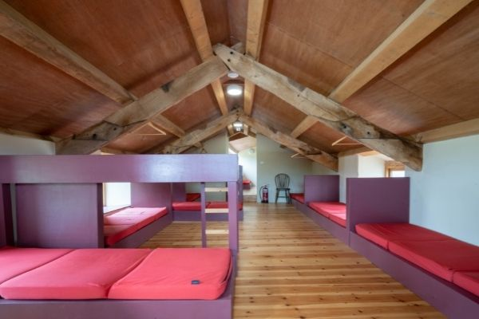
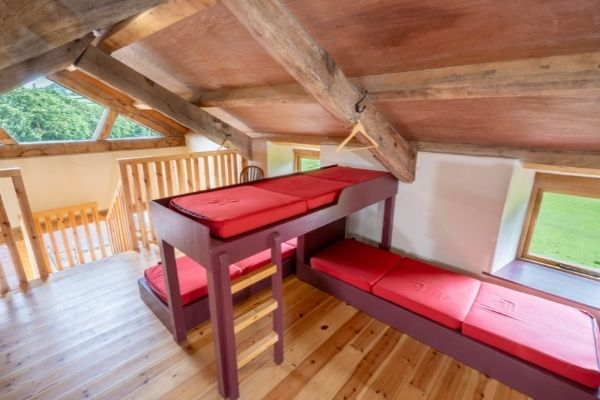
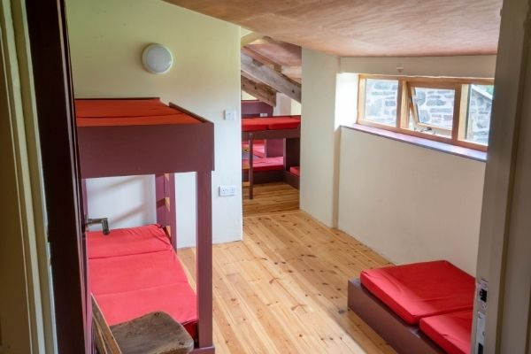
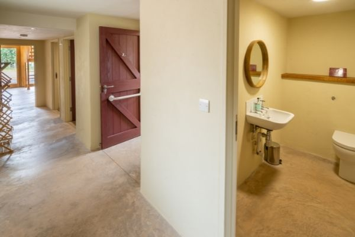

Llwyn Celyn Bunk House, Cwmyoy, Abergavenny, Monmouthshire, NP7 7NE
You may drive up to the property to unload but please park your cars in the layby opposite the entrance to the site and use the stile to cross the field. Mini buses and cars for people with limited mobility will be able to remain on site.
The Bunkhouse accommodates a group of up to 12 people. The sleeping arrangements are basic – you will need to bring sleeping bags, pillows and towels. There are two showers and loos, a kitchen/common room and an outdoor eating area.
 







Sitting in the Llanthony Valley, Llwyn Celyn is perfectly positioned to explore the Brecon Beacons National Park. Ten minutes from Llwyn Celyn is Llanthony Priory, the remains of a 13th-century priory. The site is open all year round, with free entry and nearby parking. The Brecon Beacons is a walkers paradise, with routes to suit all abilities. Walking routes can be found on the official National Park website. The website also contains information about rock climbing, mountain biking and watersports. Budding astronomers may also want to bring their telescope - the Milky Way (and beyond) can be seen in the Brecon Beacons on a clear night. Hay-on-Wye - "the town of books" - is around a 45 minute journey by car. With nearly two dozen bookshops, it is home to the Hay Festival, one of the UK's most renowned literary festivals, which takes place over 10 days between May and June every year. The pretty market town of Abergavenny - "Gateway to Wales" is around a 20 minute car journey from Llwyn Celyn. More information about Llwyn Celyn, the Landmark Trust’s project to restore the site, and the surrounding Llanthony valley area can also be found in the onsite museum, The Beast House.